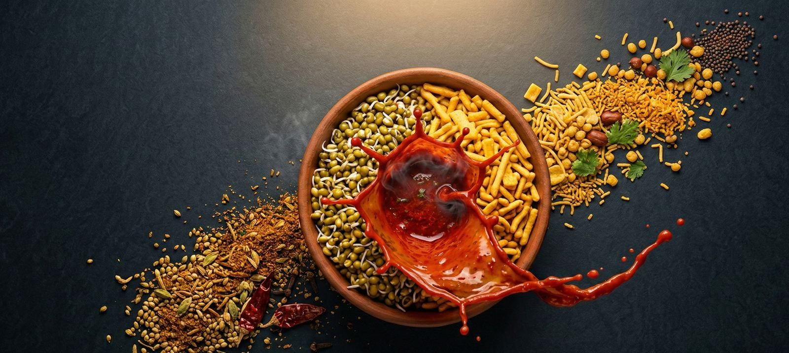

Nashik
नाशिक
- Heat
- Kat depth
- Crunch
- Bragging
Thick, dark, unapologetic kat. Wood-fire चुलीवरची misal mornings. Eaten with the Godavari breeze and zero regrets.

Checking the kadhai in Nashik…
नाशिकची सकाळ मिसळीने सुरू होते.
Not breakfast. Not a snack. A daily negotiation between you and a ladle of fiery kat. We're from Nashik — we'd know.
Every other food domain has a hyphen, a “the”, or a “-best-in-town” stuck to it. This one is just the word. We bought it before anyone in Pune woke up. Nashik got it.
Our shortlist of misal worth waking up for. Nobody paid to be here — and if your favourite is missing, tell us.
Day out
साधना चुलीवरची मिसळ
Gangapur–Satpur Link Rd, near Someshwar
The name everyone says first. Misal cooked on a wood-fired chulha since 1959, served in a village-style courtyard. Go early — the whole city had the same idea.
Open in MapsIn the city
शामसुंदर मिसळ
Satpur MIDC · also Ashok Stambh
A Satpur institution. Generous matki, soft ladi pav, and spice you can dial up or down. Fuel for half of MIDC's morning shift.
Open in MapsIn the city
तुषार मिसळ
College Road, Canada Corner
College Road's go-to for people who want the tarri to fight back. Ask for medium if you have a meeting after.
Open in MapsIn the city
अंबिका मिसळ
Panchavati Karanja
Decades in Panchavati and famous for its black misal — a dark rassa made with kala masala. Small, packed, worth the squeeze.
Open in MapsIn the city
हॉटेल विहार
Old Gangapur Naka
Thick, spicy rassa, generous portions, and butter pav. A dependable Gangapur Road plate.
Open in MapsIn the city
निखारा मिसळ
College Road, Model Colony
Nikhara means live coal — and you can taste it. A smoky rassa served in earthenware.
Open in MapsIn the city
भामरे मिसळ
Prabhat Colony, CIDCO
A misal-only specialist in CIDCO. Roomy seating and spice levels made to order.
Open in MapsDay out
ग्रेप एम्बसी
Makhmalabad, near Suyojit Bridge
Misal under actual grapevines. Very Nashik: the city's two loves, in one open-air plate.
Open in MapsDay out
पेरूची वाडी
Mungsare, Makhmalabad–Girnare Rd
Chulivarchi misal inside a guava farm, with space for kids to run around. Plan a morning, not a pit stop.
Open in MapsDay out
मामाचा मळा
Matori
A farm-style spot away from the city bustle. Slower, quieter, and made for long family breakfasts.
Open in MapsMissing one?
That tapri near your office. The one your dad swears by. Tell us — we'll go eat there, and if it's एक नंबर, it's on the list.
Recommend a placeTimings and menus change — check Maps before you head out. Spotted something wrong? Let us know.
An empty bowl. Tragic. Start adding.
तिखट
Tikhat — a respectable Nashik starting point.
You'll sweat a little. You'll order a second pav. This is healthy.
Ratings below are completely scientific and totally unbiased. Written by two people from Nashik.
नाशिक
Thick, dark, unapologetic kat. Wood-fire चुलीवरची misal mornings. Eaten with the Godavari breeze and zero regrets.
कोल्हापूर
The only city we'll admit might out-spice us. Fierce masala, serious reputation. Worthy rival. Still not home.
पुणे
Legendary spots, legendary queues, and possibly a board telling you how to eat it. Genuinely great. We said it once; don't screenshot.
मुंबई · ठाणे
Eaten standing up, between two trains, in eleven minutes flat. Loaded with farsan, running on pure momentum.
Live, in Nashik time. It's --:-- there right now.
Somewhere, a vessel of moth beans soaked overnight is quietly becoming tomorrow.
Kat simmers. Onions get chopped by the kilo. Regulars start “just passing by”.
The queue is a social club. Nobody's in a hurry except for whoever just said “extra kat”.
“Misal's finished.” The saddest two words in Marathi. Should've come earlier.
Misal lovers don't stop thinking about misal. They just wait for the next sunrise.
No catch, no card. We're starting with things we'd want ourselves. Tap what you'd use and we'll build the most-wanted ones first.
We're cooking our own take on Nashik misal. Before anything opens, we'll invite people from this page to taste it. Come taste, tell us the kat is too mild (it won't be), and help shape the final bowl.
Friends coming for Trimbakeshwar, the vineyards, or the Kumbh? A one-page guide to which misal to hit near where they're staying.
A proper Nashik-style kat masala recipe, sent to your inbox. For every Nashikkar in Bengaluru who's tired of explaining misal to flatmates.
A Sunday-morning crawl across a few misal spots with strangers who become regulars. Visitors, college groups, and Kumbh travellers welcome.
A WhatsApp sticker pack — “कट पाहिजे”, “मिसळ संपली”, “एक नंबर” — for every family group that plans breakfast by committee.
Run a misal spot, a farsan shop, a bakery — or just have strong opinions about kat? Let's talk. The list and the walks are better with you in them.
Every Nashikkar has a spot they'd defend with their life. Tell us where it is and what to order. We'll go try it — and the good ones make it onto the list, with credit to you if you want it.
We read every recommendation. No spam, ever.
धन्यवाद!
Noted. We're going to go eat there.
If it's as good as you say, it'll show up in the list above. Know another one?